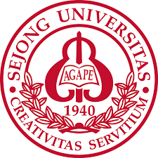

세종대학교는 서울특별시 광진구 소재 사립 종합대학교이다. 1940년 주영하가 서울특별시 성동구 광희동[3]에 설립한 경성인문중등학원이 시초이다. 학교법인 대양학원이 운영하고 있으며, 현재 총장은 제13대 배덕효이다. 학부는 단과대학 10개, 독립학부 1개, 교양대학 1개로 구성되어 있고 대학원은 일반대학원 1개, 전문대학원 1개, 특수대학원 5개로 구성되어 있다. 캠퍼스의 정문은 서울 지하철 7호선의 어린이대공원역 6번 출구와 맞닿아 있으며, 인근에 서울어린이대공원과 건국대학교 서울캠퍼스가 있다.
세종대학교
1940년
